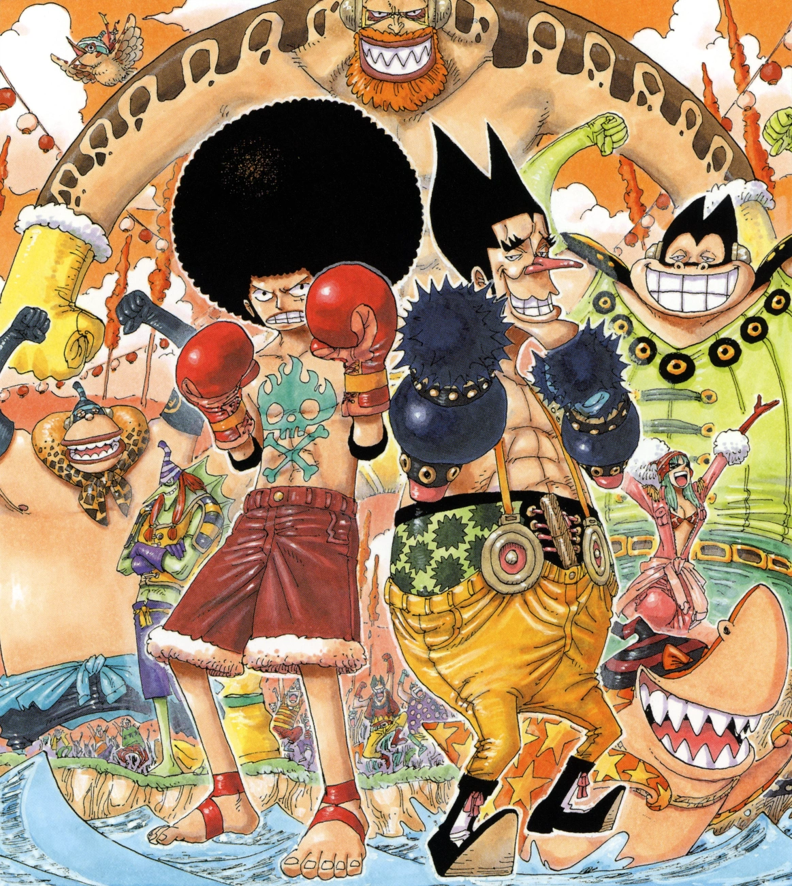

Upon arriving on Long Ring Long Land, the Straw Hat Pirates are ambushed by the Foxy Pirates and challenged to a "Davy Back Fight," with the Straw Hat crew's members at stake.
Return to the Blue Sea: The Davy Back Fight Challenge
In Mock Town, a west coast town in Jaya, Bellamy and Sarquiss are forced to fight each other as they are being controlled by Donquixote Doflamingo using his Devil Fruit powers. He is punishing them for their defeat against the Straw Hat Pirates, thereby disgracing his Jolly Roger and in turn, his name. He tells them that he has no room for small-time hoods like them under his command and dismisses them from his crew. Doflamingo then excitedly declares that the New Age has arrived where only the strong and the real pirates will survive.
Luffy and his crew arrive at the island of Long Ring Long Land, a bizarre island where everything, including the animals and plants, stretches in either length or height. Despite Nami's warning Chopper, Usopp and Luffy go exploring and find an unoccupied house, a tall horse and two "walking" stalks of bamboo. They break the bamboo and Tonjit plummets down. Tonjit has lived on the bamboo stilts for 10 years. He is delighted that his horse, Shelly, waited for him for so long although his folk are nomads and left the place years ago. He also tells the Straw Hats the geography of Long Ring Long Land, which consist of ten islands that are connected and can be walked between on foot during a big ebb every year. Tonjit's tribe changes the island every three years. After that he takes Shelly for a ride.
In the meantime, the Going Merry and the rest of the crew are surrounded by an unnamed pirate crew, stating that their Captain wants to play the Davy Back Fight with Luffy. Back at Tonjit's house, Chopper, Usopp and Luffy watch Tonjit riding Shelly just to see her getting shot by Foxy the Silver Fox, who asks Luffy to play the Davy Back Fight. In the Davy Back Fight, members of each pirate crew face off in different events in which the winner of the event can steal crew members of the losing team, even the captain. The Jolly Roger can also be taken and with it the dignity of the crew.
The Underhanded Silver Fox: The Donut Race and Groggy Ring
When Luffy and Foxy fight in this competition, the battle takes place on Foxy's ship, which is full of traps and weapons to give him the advantage. Before the match, Usopp persuades Luffy that wearing a large afro wig will increase his strength. Its actual effect, if any, unknown, but eventually, and despite his foe using several of the ship's weapons and even robotic battle suits, he manages to defeat Foxy by reflecting his beams back at him using a mirror and punching him into the ocean. In the manga, Foxy's flag is taken.
In the anime, Nami made a deal with Foxy that the winner would take 5 crewmembers, but Foxy changes this to 500 crewmembers, expecting the Straw Hats to "pay" for this through their children since they do not have that many. Thus, when Luffy wins, he takes Chopper, Robin, 497 members of Foxy's crew and their flag, leaving only 3 people. He later dismisses the crewmembers he won and they all run back to Foxy.
Zoro and Sanji take on a team of 3 known as the Groggy Monsters. Chopper was to participate, but Foxy won him in the previous game. However, the Groggy Monsters use weapons and the referee pretends he does not see them. After much difficulty, mostly due to fighting between the two crewmates, and partly due to a bias on the referee's part against them, Sanji and Zoro team up and defeat the Groggy Monsters.The referee blows his whistle signifying Sanji and Zoro's victory. Luffy then takes Chopper back as their crew.
Putting the Crew on the Line: Captain Luffy Vs Captain Foxy
Aokiji states that he is privately on the island, does not seek a confrontation and only wanted to see where Robin ended up after leaving Arabasta. After that he helps out Tonjit to get to his tribe by freezing the path to the next island with the power of the Hie Hie no Mi. After Tonjit leaves, Aokiji confronts the crew as he sees them a threat for the world. The biggest threat he sees is Robin for her ability to read the Poneglyph and tells the crew that every organization Robin belonged to does not exist anymore and she is the only survivor each time.
Robin attacks Aokiji, but fails and Aokiji tries to retaliate with a strike from a sword he instantly made by freezing grass. Zoro blocks the strike and Sanji kicks the sword away, but both get caught by Aokiji, freezing Sanji's leg and Zoro's arm. Luffy tries a punch, but only gets his fist frozen on Aokiji's body. Aokiji freezes down Robin while Robin states she really did try to change and how she may have found her home and as she is frozen, Aokiji tries to shatter her with a punch, but Luffy saves her. When Aokiji tries to stomp her, Usopp grabs her from Luffy's arms and runs to the ship along with Nami and Chopper to unfreeze her. Luffy sends Zoro and Sanji after them declaring he'll fight Aokiji one-on-one. Chopper and Nami tend to the frozen Robin in order to unfreeze her, and Zoro and Sanji use the ocean to heal their frozen limbs. Usopp says that they should go back for Luffy despite Zoro saying otherwise, which prompts Usopp to yell that they need to go back. He thinks that Sanji and Zoro do not care for Luffy's safety, which enrages Sanji and tells Usopp that Luffy demanded to be alone in the duel and they need to believe in him.
Luffy battles Aokiji but only ends up being entirely frozen. Aokiji spares Luffy due to his defeat with Crocodile stating they are even but wonders if Luffy only wanted to buy time for the others or really thought he could beat him. However, he does not pursue the Going Merry stating that the crew will be destroyed by Robin sooner or later anyway. As he leaves, he considers giving Luffy a message from Smoker but states it would be too confusing (and Luffy would not be able to hear since he is frozen). Luffy is later found by the rest of the crew and is, like Robin, defrosted. However, Usopp is exhausted by all this and wonders if more opponents this strong will just keep appearing on their journeys stating he thinks he cannot handle the pressure anymore and they may be done for. Zoro says it does not matter since Luffy may have lost, but he became stronger from fighting Aokiji. The crew continues their journey three days later.